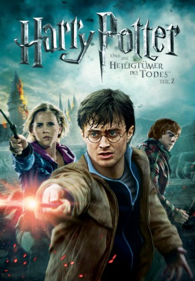

Alternativ: Harry Potter and the Deathly Hallows: Part 2
Auszeichnungen: für 3 Oscars nominiert 1 BAFTA-Awards gewonnen
 
 IMDB-Wertung: 8.1 / 10
IMDB-Wertung: 8.1 / 10  IMDB-TOP-Platzierung: 215
IMDB-TOP-Platzierung: 215  Metascore:
Metascore: 
Das Ende ist nah! Hogwarts hat als Zuflucht ausgedient, Voldemorts Schergen haben die Macht über ganz England an sich gerissen. Harry, Ron und Hermine sind auf der Flucht, die Lage scheint aussichtslos. Eine letzte Chance bleibt dem Trio noch, das Blatt zu wenden und die Welt der Menschen vor dem Untergang zu bewahren: Sie müssen die legendären Heiligtümer des Todes finden. Nur mit diesen magischen Artefakten kann Voldemort noch besiegt werden. Doch die Freunde haben keinen Schimmer, wo sich die vor langer Zeit verschollenen Objekte befinden...
Jahr: 2011
Dauer: 130 Minuten
FSK: 12
Land: USA Studio: Warner Bros.Tonspuren: DD5.1 - ,
Untertitel: Deutsch,
Auflösung: 1080p (1920x800) Größe: 5816 MB
Genre: Abenteuer, Drama, Fantasy, Mystery
Regisseur: David Yates
Drehbuch: Steve Kloves, J.K. Rowling
Soundtrack: Alexandre Desplat
Darsteller:
 Ralph Fiennes als Lord Voldemort
Ralph Fiennes als Lord Voldemort Michael Gambon als Professor Albus Dumbledore
Michael Gambon als Professor Albus Dumbledore Alan Rickman als Professor Severus Snape
Alan Rickman als Professor Severus Snape Daniel Radcliffe als Harry Potter
Daniel Radcliffe als Harry Potter Rupert Grint als Ron Weasley
Rupert Grint als Ron Weasley Emma Watson als Hermione Granger
Emma Watson als Hermione Granger Evanna Lynch als Luna Lovegood
Evanna Lynch als Luna Lovegood Domhnall Gleeson als Bill Weasley
Domhnall Gleeson als Bill Weasley Warwick Davis als Griphook / Professor Filius Flitwick
Warwick Davis als Griphook / Professor Filius Flitwick John Hurt als Ollivander
John Hurt als Ollivander Helena Bonham Carter als Bellatrix Lestrange
Helena Bonham Carter als Bellatrix Lestrange Kelly Macdonald als Helena Ravenclaw
Kelly Macdonald als Helena Ravenclaw Jason Isaacs als Lucius Malfoy
Jason Isaacs als Lucius Malfoy Helen McCrory als Narcissa Malfoy
Helen McCrory als Narcissa Malfoy Tom Felton als Draco Malfoy
Tom Felton als Draco Malfoy Ciarán Hinds als Aberforth Dumbledore
Ciarán Hinds als Aberforth Dumbledore Matthew Lewis als Neville Longbottom
Matthew Lewis als Neville Longbottom Devon Murray als Seamus Finnigan
Devon Murray als Seamus Finnigan Jessie Cave als Lavender Brown
Jessie Cave als Lavender Brown Afshan Azad als Padma Patil
Afshan Azad als Padma Patil Freddie Stroma als Cormac McLaggen
Freddie Stroma als Cormac McLaggen Alfred Enoch als Dean Thomas
Alfred Enoch als Dean Thomas Katie Leung als Cho Chang
Katie Leung als Cho Chang Bonnie Wright als Ginny Weasley
Bonnie Wright als Ginny Weasley Ralph Ineson als Amycus Carrow
Ralph Ineson als Amycus Carrow Maggie Smith als Professor Minerva McGonagall
Maggie Smith als Professor Minerva McGonagall Jim Broadbent als Professor Horace Slughorn
Jim Broadbent als Professor Horace Slughorn Josh Herdman als Gregory Goyle
Josh Herdman als Gregory Goyle Miriam Margolyes als Professor Pomona Sprout
Miriam Margolyes als Professor Pomona Sprout Gemma Jones als Madam Pomfrey
Gemma Jones als Madam Pomfrey George Harris als Kingsley Shacklebolt
George Harris als Kingsley Shacklebolt David Thewlis als Remus Lupin
David Thewlis als Remus Lupin Julie Walters als Molly Weasley
Julie Walters als Molly Weasley Mark Williams als Arthur Weasley
Mark Williams als Arthur Weasley James Phelps als Fred Weasley
James Phelps als Fred Weasley Oliver Phelps als George Weasley
Oliver Phelps als George Weasley Chris Rankin als Percy Weasley
Chris Rankin als Percy Weasley David Bradley als Argus Filch
David Bradley als Argus Filch Nick Moran als Scabior
Nick Moran als Scabior Natalia Tena als Nymphadora Tonks
Natalia Tena als Nymphadora Tonks Dave Legeno als Fenrir Greyback
Dave Legeno als Fenrir Greyback Emma Thompson als Professor Sybil Trelawney
Emma Thompson als Professor Sybil Trelawney Leslie Phillips als The Sorting Hat
Leslie Phillips als The Sorting Hat Geraldine Somerville als Lily Potter
Geraldine Somerville als Lily PotterDatei: X:\7+mehr(A-Z)\Harry Potter\Harry Potter 7.2 - und die Heiligtümer des Todes (2011, FSK12, 1920x800) 3D.mkv seit 25.11.2015
Festplatte: HD Collection-7+mehr(A-Z)+Person
 Es gibt insgesamt 17 Filme in der Gruppe '7+mehr(A-Z)\Harry Potter'
Es gibt insgesamt 17 Filme in der Gruppe '7+mehr(A-Z)\Harry Potter'